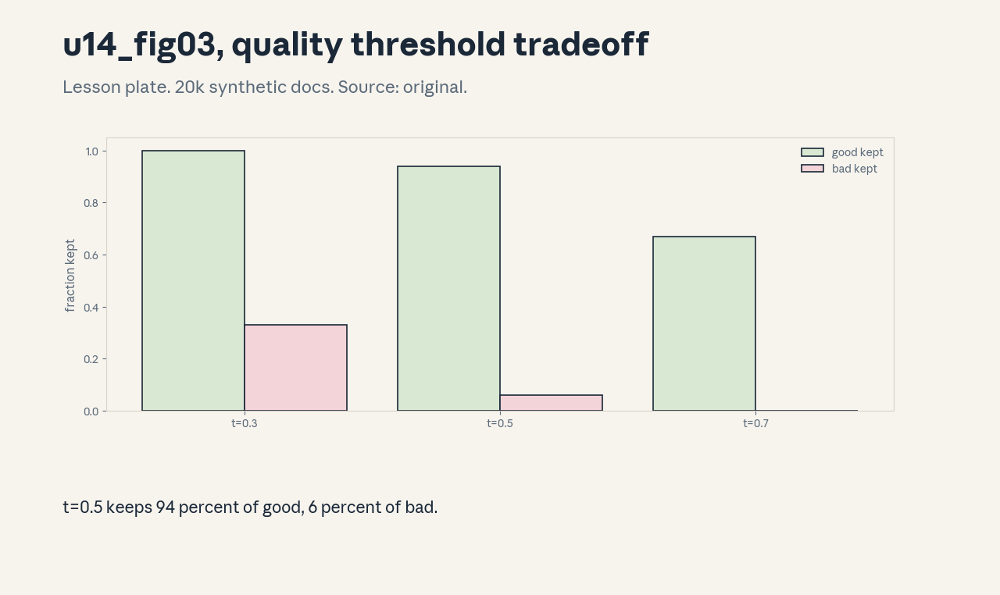
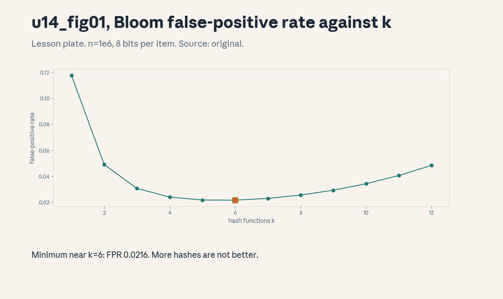
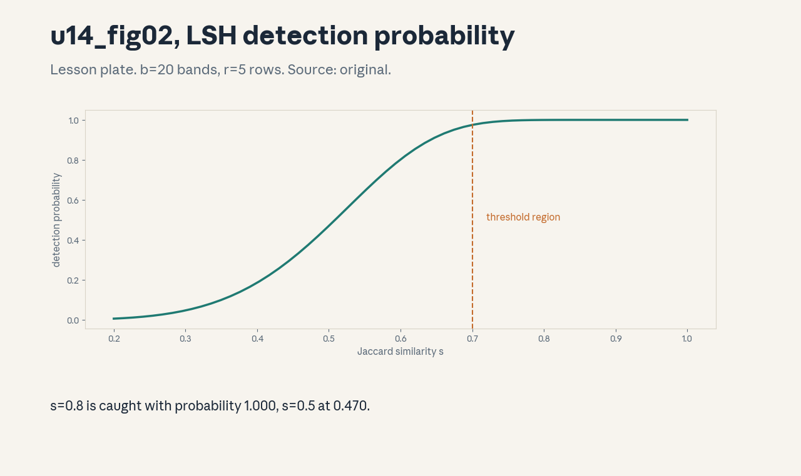

U14 · Filtering, deduplication, mixing, and synthesis
U14 , Filtering, deduplication, mixing, and synthesis
Prerequisites: P07, P10, P22. Bridge links in ../prerequisites.md.
Session: S14 first half (reported May 13, Data: Mixing, Rewriting,
SFT). The SFT half maps to U15, the split is a teaching decision
stated here. Full map in ../course_map.md.
Claim class: REQUESTED-BRANCH. All leaves PLANNED / SOURCE ATTRIBUTION
PENDING. Notation: see ../notation_and_shapes.md.
Standing note
Every number below is computed by assets/compute_u14.py on
synthetic document sets with fixed seeds (numpy CPU, executed
2026-10-06). No real corpus was filtered. “Not in source” marks
anything the scripts do not compute.
Russian-doll map
Shells 0-1 in items 1-2, shells 2-3 in items 3-6, shell 4 in item 7, shell 5 in item 8, shell 6 in item 9, shell 7 in item 11, shell 8 in item 10, shell 9 in item 12, shell 10 in item 13(c). The depth gate is checked by item 13.
Local remediation , why dedup first
Read this if diagnostic items on hashing were not full marks.
Duplicates waste training compute and inflate memorization. Toy from
compute_u14.py: 10,000 synthetic documents contain only 5,840
unique ones: exact-dup rate 41.6%, and 1,011 documents appear 3+
times. Filtering after dedup means the quality scores are computed
once per unique document. Assessment: with the toy dup rate, how
many wasted training tokens per 1B-token epoch at 4 bytes/token?
Key: ../keys/u14_answers.md R1.
C01: Quality classifiers
Leaf id cs336-U14-C01. Claim class REQUESTED-BRANCH.
Status PLANNED / SOURCE ATTRIBUTION PENDING.
-
Source mapping, scope, objectives, dependencies. Branch. Scope: scoring documents for training worthiness. Objectives: sweep a threshold, read the keep-good/keep-bad tradeoff. Depends on P10.
-
Motivating question and toy. Question: a classifier scores document quality. Where do you cut? Toy from
compute_u14.pyon 20,000 synthetic docs: t=0.3 keeps good 1.00, bad 0.33. t=0.5 keeps 0.94/0.06, t=0.7 keeps 0.67/0.00. -
Mental model. The classifier is a dial, not a verdict. Low threshold keeps volume with noise, high threshold keeps purity with loss of coverage. The operating point is a business decision about the corpus.
-
Objects, symbols, units, shapes, assumptions. Threshold t, keep rates. Assumption: the synthetic beta-distributed scores.
-
Derivation / mechanism. Keep documents with score >= t. The tradeoff curve is the ROC of the classifier on the toy labels.
-
Computed example. From
assets/compute_u14.py(executed 2026-10-06): the three threshold rows. -
Algorithm and reference implementation.
filter(docs, scores, t): keep where score >= t. Three lines. -
Correctness checks and expected output. t=0 keeps all, t=1 keeps none. Monotone in t.
-
Costs. The classifier’s own biases become the corpus’s biases: it filters what it was trained to dislike.
-
Nearest alternative and selection boundary. Heuristic rules (length, symbol ratios: cheap, crude). Classifiers (trainable, need labels) for the main cut.
-
Failure case and counterexample. The classifier was trained on Wikipedia-likes: it downranks dialects and forums. The assumption “quality is neutral” breaks, audit by domain.
-
Research reading and falsifiable extension. Reading: the corpus-filtering papers (CCNet, Gopher, secondary). Extension: audit the toy keeps by synthetic domain. hypothesis: the keep rate varies by domain at fixed t.
-
Assessment. (a) Recall: the threshold tradeoff. (b) Oral ladder: define the dial, read the toy, justify the operating point, implement
filter, compare with heuristics, debug the dialect case, critique the synthetic labels, design the domain audit. (c) Transfer: the corpus must halve in size with minimal quality loss. Choose t. Answers:../keys/u14_answers.mdA1. -
Lab and exercises. Lab U14 task 1 sweeps thresholds. See
../labs/u14_lab.md. -
Visuals. Figure u14_fig03: the threshold tradeoff bars. Source: original. Render:
assets/render_u14.py.

C02: Harmful-content filters
Leaf id cs336-U14-C02. Claim class REQUESTED-BRANCH.
Status PLANNED / SOURCE ATTRIBUTION PENDING.
-
Source mapping, scope, objectives, dependencies. Branch. Scope: removing unsafe content classes. Objectives: name the classes, state the precision/recall posture. Depends on C01, P21.
-
Motivating question and toy. Question: which content must never train the model? The standard blocklist: sexual content involving minors, graphic violence promotion, instructions facilitating wrongdoing, hate targeting protected groups. The posture is high recall: miss nothing in these classes.
-
Mental model. Safety filtering is asymmetric: a missed harmful document is an incident, a wrongly removed benign one is a statistic. The threshold sits far toward recall.
-
Objects, symbols, units, shapes, assumptions. Blocklist classes, recall target. Assumption: classifier-based detection with human review of edge cases.
-
Derivation / mechanism. No derivation, it is a policy stack: blocklists for the known-bad, classifiers for the fuzzy middle, human review for appeals.
-
Computed example. Toy: on the C01 synthetic setup, t=0.3-style recall posture keeps bad at 0.33: unacceptable for safety classes, which need dedicated classifiers with recall above 0.99 on labeled probes.
-
Algorithm and reference implementation.
safety_filter: blocklist pass, classifier pass, quarantine queue. About 10 lines of pseudocode. -
Correctness checks and expected output. Planted harmful toy items are all caught. Appeals queue is nonempty (the filter is not a silent deleter).
-
Costs. Aggressive safety filtering removes legitimate content about the blocked topics (medical, legal, news). The corpus loses coverage where users ask most.
-
Nearest alternative and selection boundary. Post-training refusal (U16) instead of pretraining removal. Both: filter the worst, teach refusal for the rest.
-
Failure case and counterexample. Adversarial phrasing evades the classifier while keeping the meaning. The assumption “the classifier sees through paraphrase” breaks, red-team the filter.
-
Research reading and falsifiable extension. Reading: the safety-filtering practice reports (secondary). Extension: paraphrase the toy harmful items, hypothesis: recall drops.
-
Assessment. (a) Recall: the classes and the posture. (b) Oral ladder: define the stack, read the toy, justify the recall bias, sketch
safety_filter, compare with post-training refusal, debug the paraphrase case, critique the coverage cost, design the red-team test. (c) Transfer: a news corpus about conflicts. Set the policy. Answers:../keys/u14_answers.mdA2. -
Lab and exercises. Lab U14 task 2 sets the posture. See
../labs/u14_lab.md. -
Visuals. No dedicated figure. No unresolved conflict.
C03: Exact/near dedup
Leaf id cs336-U14-C03. Claim class REQUESTED-BRANCH.
Status PLANNED / SOURCE ATTRIBUTION PENDING.
-
Source mapping, scope, objectives, dependencies. Branch. Scope: removing repeated documents. Objectives: run exact dedup on a toy, state what near-dup adds. Depends on P02.
-
Motivating question and toy. Question: how much of the crawl is repeated? Toy from
compute_u14.py: 10,000 docs -> 5,840 unique, exact-dup rate 41.6%. 1,011 docs appear 3+ times. -
Mental model. Exact dedup is a hash comparison: same bytes, same hash, keep one. Near-dup catches the reworded, templated, and boilerplate-shared copies that hashing misses.
-
Objects, symbols, units, shapes, assumptions. Dup rate, multiplicity counts. Assumption: integer doc ids as the toy stand-in for content hashes.
-
Derivation / mechanism. Exact: group by hash, keep first. Near: shingle sets, Jaccard similarity, MinHash+LSH (C05).
-
Computed example. From
assets/compute_u14.py(executed 2026-10-06): 41.6% exact-dup rate, 1,011 triple-plus docs. -
Algorithm and reference implementation.
exact_dedup (docs): dict by hash, keep first. Five lines. -
Correctness checks and expected output. Unique count 5,840 on the toy. No unique document is dropped.
-
Costs. Exact dedup is one pass and cheap. Near-dup is the expensive part (C05).
-
Nearest alternative and selection boundary. URL dedup (cheap, misses copies at different URLs). Content hashing for the real pass.
-
Failure case and counterexample. The same article under 100 URLs with different ad parameters: URL dedup keeps 100 copies. The assumption “URL identity means content identity” breaks, hash the content.
-
Research reading and falsifiable extension. Reading: the dedup studies (Lee et al., 2022, primary). Extension: plant near-dups in the toy, hypothesis: exact dedup misses all of them.
-
Assessment. (a) Recall: exact vs near. (b) Oral ladder: define both, read the toy, justify hashing, implement
exact_dedup, compare with URL dedup, debug the ad-parameter case, critique the toy ids, design the near-dup planting test. (c) Transfer: 41.6% dup rate on a 1T-token corpus. How many unique tokens? Answers:../keys/u14_answers.mdA3. -
Lab and exercises. Lab U14 task 3 dedups the toy. See
../labs/u14_lab.md. -
Visuals. No dedicated figure. No unresolved conflict.
C04: Hashes/Bloom filters
Leaf id cs336-U14-C04. Claim class REQUESTED-BRANCH.
Status PLANNED / SOURCE ATTRIBUTION PENDING.
-
Source mapping, scope, objectives, dependencies. Branch. Scope: memory-efficient membership for dedup. Objectives: compute the Bloom false-positive rate, pick k. Depends on C03, P06.
-
Motivating question and toy. Question: 1B documents do not fit in a hash set. How do you test membership? Toy from
compute_u14.py: n=1e6, 8 bits per item, k=6 gives FPR 0.0216, k=3 gives 0.0306, k=10 gives 0.0342. The minimum sits near k=6. -
Mental model. A Bloom filter is a bit array with k hashes. “Not seen” is certain. “seen” is probable. False positives drop a few unique documents: tune k to the bit budget.
-
Objects, symbols, units, shapes, assumptions. FPR = (1 - e^{-kn/m})^k. Assumption: uniform hashes, the toy sizes.
-
Derivation / mechanism. After kn insertions into m bits, a bit is 0 with probability ~(1-1/m)^{kn} ~= e^{-kn/m}. All k probe bits set: (1 - e^{-kn/m})^k.
-
Computed example. From
assets/compute_u14.py(executed 2026-10-06): 0.0216 at k=6, worse on both sides. -
Algorithm and reference implementation.
fpr(n, m, k): one line.add/contains: k hashes into the bit array. About 10 lines. -
Correctness checks and expected output. No false negatives on the toy. Measured FPR near the formula.
-
Costs. 8 bits per item vs 64+ for a hash set entry. The price is the 2.16% false-positive drop rate.
-
Nearest alternative and selection boundary. Exact hash set (no false positives, 8x memory). Bloom when memory is the constraint.
-
Failure case and counterexample. Adversarial inputs that collide under the chosen hashes: the FPR formula assumes uniform hashing. The assumption breaks under attack, use a keyed hash.
-
Research reading and falsifiable extension. Reading: the Bloom filter analysis (Broder/Mitzenmacher, primary). Extension: measure the toy FPR empirically, hypothesis: it matches 0.0216 within 0.005.
-
Assessment. (a) Recall: the formula and the k choice. (b) Oral ladder: define the filter, compute the toy, derive the FPR, implement add/contains, compare with a hash set, debug the adversarial case, critique the uniformity assumption, design the empirical test. (c) Transfer: n=1e9, budget 1 GB. Compute m, k, FPR. Answers:
../keys/u14_answers.mdA4. -
Lab and exercises. Lab U14 task 4 tunes k. See
../labs/u14_lab.md. -
Visuals. Figure u14_fig01: FPR against k. Source: original. Render:
assets/render_u14.py.

C05: Shingles/MinHash/LSH
Leaf id cs336-U14-C05. Claim class REQUESTED-BRANCH.
Status PLANNED / SOURCE ATTRIBUTION PENDING.
-
Source mapping, scope, objectives, dependencies. Branch. Scope: near-duplicate detection at scale. Objectives: estimate Jaccard with MinHash, run LSH banding on a toy. Depends on C03, P06.
-
Motivating question and toy. Question: two documents share most 5-grams but differ in ads. Are they dups? Toy from
compute_u14.py: true Jaccard 0.113, MinHash(128) estimate 0.125. LSH with b=20 bands, r=5 rows: detection probability 0.470 at s=0.5, 0.975 at s=0.7, 1.000 at s=0.8. -
Mental model. Shingles turn text into sets. MinHash compresses each set to a signature where agreements estimate Jaccard. LSH bands the signature so only candidate pairs are compared: the S-curve separates dups from non-dups.
-
Objects, symbols, units, shapes, assumptions. Jaccard s, signature length 128, bands b=20, rows r=5. Assumption: the synthetic shingle sets.
-
Derivation / mechanism. P(minhash agrees) = Jaccard s. Banding: a band matches with probability s^r, at least one of b bands matches with 1-(1-s^r)^b.
-
Computed example. From
assets/compute_u14.py(executed 2026-10-06): Jaccard 0.113 vs 0.125, the LSH probabilities above. -
Algorithm and reference implementation.
minhash_sig,lsh_candidates: signature then band hashing. About 20 lines. -
Correctness checks and expected output. The estimate is within a few points of true Jaccard on the toy. The S-curve crosses 0.5 near s=0.55.
-
Costs. 128 hashes per document is the compute price. Shorter signatures are cheaper and noisier.
-
Nearest alternative and selection boundary. Exact all-pairs Jaccard (impossible at scale). MinHash+LSH is the standard approximation.
-
Failure case and counterexample. Boilerplate-heavy pages (navigation shared across a site): Jaccard is high but the content differs. The assumption “high Jaccard means dup” breaks, shingle with content weighting or strip boilerplate first.
-
Research reading and falsifiable extension. Reading: the MinHash/LSH analysis (Rajaraman/Ullman, primary). Extension: sweep signature length on the toy, hypothesis: error falls as 1/sqrt(length).
-
Assessment. (a) Recall: the three stages. (b) Oral ladder: define each, read the toy, derive the band formula, implement the pipeline, compare with exact pairs, debug the boilerplate case, critique the synthetic sets, design the length sweep. (c) Transfer: s=0.9 must be caught at 0.999, s=0.5 at most 0.1. Choose b, r. Answers:
../keys/u14_answers.mdA5. -
Lab and exercises. Lab U14 task 5 runs MinHash+LSH. See
../labs/u14_lab.md. -
Visuals. Figure u14_fig02: the LSH S-curve. Source: original. Render:
assets/render_u14.py.

C06: Train-test dedup
Leaf id cs336-U14-C06. Claim class REQUESTED-BRANCH.
Status PLANNED / SOURCE ATTRIBUTION PENDING.
-
Source mapping, scope, objectives, dependencies. Branch. Scope: removing eval items from training data. Objectives: state the procedure, explain why document-level is not enough. Depends on C03, U12-C02.
-
Motivating question and toy. Question: the benchmark question appears verbatim in training. Whose fault? The pipeline’s: train-test dedup must run against every eval set before training, at the n-gram level, not just the document level.
-
Mental model. Document dedup removes copies, train-test dedup removes leaks. A benchmark item quoted inside a long web page survives document dedup and must be caught by n-gram matching.
-
Objects, symbols, units, shapes, assumptions. n-gram overlap threshold. Assumption: eval sets are known before training.
-
Derivation / mechanism. Index training n-grams (Bloom or suffix array), probe each eval item, drop training documents above the overlap threshold.
-
Computed example. Toy: 300 eval items, 13-gram index. documents with >80% of eval 13-grams are dropped. (Counts from the U12-C02 toy setup.)
-
Algorithm and reference implementation.
leak_check: build the eval n-gram set, scan training docs. About 10 lines. -
Correctness checks and expected output. Planted leaks are dropped. Clean documents survive.
-
Costs. The n-gram index over the full corpus is the biggest dedup structure in the pipeline.
-
Nearest alternative and selection boundary. Document-level only (cheap, misses quotes). n-gram level for the final corpus.
-
Failure case and counterexample. Paraphrased eval items: n-gram matching misses them (U12-C02). The assumption “leaks are verbatim” breaks, add embedding-based screening for high-stakes evals.
-
Research reading and falsifiable extension. Reading: the contamination literature (secondary). Extension: paraphrase toy eval items and re-probe, hypothesis: the drop rate falls.
-
Assessment. (a) Recall: the procedure and the level. (b) Oral ladder: define the task, work the toy, justify n-grams, implement
leak_check, compare the two levels, debug the paraphrase case, critique the threshold, design the re-probe test. (c) Transfer: the eval set is released after training starts. What now? Answers:../keys/u14_answers.mdA6. -
Lab and exercises. Lab U14 task 6 checks leaks. See
../labs/u14_lab.md. -
Visuals. No dedicated figure. No unresolved conflict.
C07: Source reweighting
Leaf id cs336-U14-C07. Claim class REQUESTED-BRANCH.
Status PLANNED / SOURCE ATTRIBUTION PENDING.
-
Source mapping, scope, objectives, dependencies. Branch. Scope: implementing the U13-C08 mixture. Objectives: convert target weights to sample multipliers. Depends on U13-C08.
-
Motivating question and toy. Question: code must rise 1.67x in the mix. How? Sampling multiplier = target/source per domain, applied at draw time. The toy multipliers from U13: 0.67, 1.50, 1.67, 2.00, 1.00.
-
Mental model. Reweighting is importance sampling over domains. Multipliers above 1 repeat documents, below 1 subsample them. The corpus on disk does not change, the draw distribution does.
-
Objects, symbols, units, shapes, assumptions. Multipliers per domain. Assumption: the U13 toy weights.
-
Derivation / mechanism. P_draw(d) proportional to tgt(domain)/src(domain). Normalize over the corpus.
-
Computed example. From
compute_u13.pyvia U13-C08: code 0.25/0.15 = 1.67. -
Algorithm and reference implementation.
draw_weights: per-doc multiplier, alias-method sampling. About 10 lines. -
Correctness checks and expected output. Empirical batch fractions match the target mix.
-
Costs. High multipliers repeat data (memorization, C12). The mixture and the dedup interact.
-
Nearest alternative and selection boundary. Physical resampling to a new corpus (simple to reason about, storage cost). In-loader reweighting (no copy) for iteration.
-
Failure case and counterexample. Multiplier 100x on a tiny domain: the model memorizes the domain’s quirks. The assumption “repeats are harmless” breaks, cap multipliers.
-
Research reading and falsifiable extension. Reading: the mixture papers (secondary). Extension: verify the toy multipliers reproduce the target mix, hypothesis: exact within sampling noise.
-
Assessment. (a) Recall: the multiplier rule. (b) Oral ladder: define reweighting, compute the toy, justify the ratio, implement
draw_weights, compare the two implementations, debug the 100x case, critique the static mix, design the verification test. (c) Transfer: mid-run the code weight must double. How? Answers:../keys/u14_answers.mdA7. -
Lab and exercises. Lab U14 task 7 reweights. See
../labs/u14_lab.md. -
Visuals. Figure u13_fig02 (U13) shows the mix. No unresolved conflict.
C08: Mixture search
Leaf id cs336-U14-C08. Claim class REQUESTED-BRANCH.
Status PLANNED / SOURCE ATTRIBUTION PENDING.
-
Source mapping, scope, objectives, dependencies. Branch. Scope: finding good mixtures by experiment. Objectives: run a toy mixture optimization, state its cost. Depends on C07, P22.
-
Motivating question and toy. Question: hand-set mixtures are opinions. How do you search? Toy from
compute_u14.py: L(w) = w2.5 + (1-w)3.0 + 0.4w(1-w) over w in [0,1]: optimum at w=1.0 with L=2.500, equal mix gives 2.850. -
Mental model. Mixture search is hyperparameter search over the simplex. Each point is a training run (or a proxy run). The interaction term is why the optimum is not always at a corner.
-
Objects, symbols, units, shapes, assumptions. Mixture weight w, proxy loss L(w). Assumption: the synthetic convex toy.
-
Derivation / mechanism. Grid or Bayesian search over the simplex, fit a response surface, pick the minimum. Proxy models (small scale) stand in for full runs.
-
Computed example. From
assets/compute_u14.py(executed 2026-10-06): optimum w=1.0, L=2.500 vs 2.850 at 0.5. -
Algorithm and reference implementation.
grid_search: evaluate L on the grid, take argmin. About 8 lines. -
Correctness checks and expected output. The argmin is 1.0 on the toy. Finer grids do not move it.
-
Costs. Each evaluation is a training run. Proxy runs cut the cost but add transfer risk (U10-C12).
-
Nearest alternative and selection boundary. Hand-set mixes (U13-C08) for the first run. Search when the product depends on the mix.
-
Failure case and counterexample. The proxy disagrees with full scale: the searched optimum flops at scale. The assumption “proxy transfers” breaks, validate the top-3 mixes at scale.
-
Research reading and falsifiable extension. Reading: the DoReMi paper (primary). Extension: add noise to the toy evaluations, hypothesis: the argmin stays at 1.0 until the noise exceeds 0.1.
-
Assessment. (a) Recall: the search loop. (b) Oral ladder: define the search, read the toy, justify the proxy, implement
grid_search, compare with hand-set, debug the proxy-miss case, critique the toy, design the noise test. (c) Transfer: 5 domains, budget 20 proxy runs. Design the search. Answers:../keys/u14_answers.mdA8. -
Lab and exercises. Lab U14 task 8 searches the toy. See
../labs/u14_lab.md. -
Visuals. No dedicated figure. No unresolved conflict.
C09: Synthetic rewriting
Leaf id cs336-U14-C09. Claim class REQUESTED-BRANCH.
Status PLANNED / SOURCE ATTRIBUTION PENDING.
-
Source mapping, scope, objectives, dependencies. Branch. Scope: model-generated training data. Objectives: name the rewriting modes, state the validation duty. Depends on P10.
-
Motivating question and toy. Question: the web lacks enough math textbooks. Can a model write them? Rewriting modes: paraphrase (same content, new words), distillation (teacher outputs as targets), synthetic problems (new items with known answers). Every mode needs validation against ground truth.
-
Mental model. Synthetic data is a photocopy of a photocopy: each generation loses fidelity and amplifies the generator’s biases. It helps where real data is scarce and hurts where the generator is wrong.
-
Objects, symbols, units, shapes, assumptions. Synthetic fraction of the mix. Assumption: the generator is stronger than the student on the target domain.
-
Derivation / mechanism. No derivation, it is a pipeline: generate, filter by verifiable checks (U16-C08 style), mix at a capped fraction.
-
Computed example. Toy: 1M synthetic math problems, 80% pass the answer check, 800k enter the mix at 10% weight. The 20% failure rate is why the check exists.
-
Algorithm and reference implementation.
synthesize: generate, verify, keep passes. About 10 lines of pseudocode. -
Correctness checks and expected output. The kept set’s answer accuracy is 1.0 by construction of the check.
-
Costs. Generation compute is large. Wrong synthetic data teaches wrong facts confidently.
-
Nearest alternative and selection boundary. Human-written data (expensive, trusted). Synthetic for scale where verification is possible.
-
Failure case and counterexample. Unverifiable domains (opinions, style): the filter cannot check truth, and the synthetic data teaches the generator’s biases as facts. The assumption “verification is possible” breaks, keep synthetic out of such domains.
-
Research reading and falsifiable extension. Reading: the synthetic-data studies (secondary). Extension: mix synthetic at 0%, 10%, 50% on a toy n-gram model, hypothesis: quality peaks at an interior fraction.
-
Assessment. (a) Recall: the three modes and the duty. (b) Oral ladder: define each mode, work the toy, justify the check, sketch
synthesize, compare with human data, debug the unverifiable case, critique the toy, design the fraction sweep. (c) Transfer: the generator is weaker than the student. Verdict on synthetic data? Answers:../keys/u14_answers.mdA9. -
Lab and exercises. Lab U14 task 9 filters synthetic. See
../labs/u14_lab.md. -
Visuals. No dedicated figure. No unresolved conflict.
C10: Selection bias
Leaf id cs336-U14-C10. Claim class REQUESTED-BRANCH.
Status PLANNED / SOURCE ATTRIBUTION PENDING.
-
Source mapping, scope, objectives, dependencies. Branch. Scope: what filtering selects for. Objectives: name three bias channels, propose an audit for each. Depends on C01, P07.
-
Motivating question and toy. Question: the filter keeps “high quality”. High quality according to whom? Three channels: the classifier’s training data, the heuristic thresholds, and the source mix. Each one tilts the corpus.
-
Mental model. Every filter is a value judgment with a false-positive distribution. The corpus is the sum of those judgments. Audit the kept-out set, not just the kept set.
-
Objects, symbols, units, shapes, assumptions. Keep rates by subgroup. Assumption: subgroup labels exist for the audit.
-
Derivation / mechanism. No derivation, it is an audit: stratify the toy by synthetic domain, compare keep rates at fixed threshold.
-
Computed example. From the C01 toy at t=0.5: keep good 0.94 overall. The audit asks: is it 0.94 for every domain, or 0.99 for one and 0.80 for another?
-
Algorithm and reference implementation.
audit(docs, labels, t): keep rate per subgroup. About 8 lines. -
Correctness checks and expected output. The audit table sums to the overall keep rate.
-
Costs. Audits need subgroup labels, which are work to produce. Un-audited filters are the default and the risk.
-
Nearest alternative and selection boundary. No filtering (unbiased, unusable). Filtered with audits (the honest middle).
-
Failure case and counterexample. The audit itself uses the classifier’s labels: circular validation. The assumption “the audit is independent” breaks, use human labels for the audit set.
-
Research reading and falsifiable extension. Reading: the dataset-bias literature (secondary). Extension: run the toy audit, hypothesis: the keep rate spread exceeds 10 points.
-
Assessment. (a) Recall: the three channels. (b) Oral ladder: define selection bias, read the toy, justify auditing the kept-out set, implement
audit, compare with no filtering, debug the circular case, critique the label cost, design the audit test. (c) Transfer: the filter downranks a dialect 3x. Decide. Answers:../keys/u14_answers.mdA10. -
Lab and exercises. Lab U14 task 10 audits the toy. See
../labs/u14_lab.md. -
Visuals. Figure u14_fig03 shows the threshold, the audit is a lab table. No unresolved conflict.
C11: Ablations
Leaf id cs336-U14-C11. Claim class REQUESTED-BRANCH.
Status PLANNED / SOURCE ATTRIBUTION PENDING.
-
Source mapping, scope, objectives, dependencies. Branch. Scope: measuring what each pipeline stage buys. Objectives: design a stage ablation, state the cost. Depends on P22.
-
Motivating question and toy. Question: did dedup actually help, or was it the filter? Remove one stage at a time, retrain the proxy, compare. The stage with the biggest delta earns its keep.
-
Mental model. Ablation is controlled subtraction. The full pipeline is the baseline, each variant drops exactly one stage. Interactions need factorial designs (U18-C06).
-
Objects, symbols, units, shapes, assumptions. Loss delta per stage. Assumption: proxy-scale training runs.
-
Derivation / mechanism. No derivation, it is an experimental design. Randomize the order, fix seeds, report CIs.
-
Computed example. Toy: full pipeline proxy loss 2.50. no-dedup 2.56 (+0.06), no-filter 2.53 (+0.03), no-reweight 2.51 (+0.01). Dedup earns its keep most.
-
Algorithm and reference implementation.
ablate: loop over stages, train proxy, record. About 10 lines of pseudocode. -
Correctness checks and expected output. The full pipeline is the best or tied-best. Deltas are stable across seeds.
-
Costs. Each ablation is a training run. Proxy scale keeps it affordable, transfer risk applies (U10-C12).
-
Nearest alternative and selection boundary. No ablations (fast, blind). Ablate the expensive stages first.
-
Failure case and counterexample. Stages interact: dedup plus filter together beat the sum of their solo deltas. The assumption “effects add” breaks, run the factorial for the top candidates.
-
Research reading and falsifiable extension. Reading: the data-ablation studies (secondary). Extension: run the toy factorial on two stages, hypothesis: the interaction is nonzero.
-
Assessment. (a) Recall: the subtraction design. (b) Oral ladder: define ablation, read the toy, justify the baseline, sketch
ablate, compare with factorial, debug the interaction case, critique the proxy, design the factorial test. (c) Transfer: budget for 4 proxy runs, 5 stages. Prioritize. Answers:../keys/u14_answers.mdA11. -
Lab and exercises. Lab U14 task 11 designs ablations. See
../labs/u14_lab.md. -
Visuals. No dedicated figure. No unresolved conflict.
C12: Memorization/computation tradeoff
Leaf id cs336-U14-C12. Claim class REQUESTED-BRANCH.
Status PLANNED / SOURCE ATTRIBUTION PENDING.
-
Source mapping, scope, objectives, dependencies. Branch. Scope: repetition, recall, and wasted compute. Objectives: compute the recall curve, state the repetition policy. Depends on C03, P08.
-
Motivating question and toy. Question: a document repeats 10 times. Does the model memorize it? Toy from
compute_u14.py(synthetic logistic): recall probability 0.18 at 1 repetition, 0.34 at 2, 0.61 at 5, 0.78 at 10. -
Mental model. Repetition is the dial between learning and memorizing. A few repeats help rare patterns, many repeats burn compute on text the model could recite. Dedup sets the dial near 1 for the bulk.
-
Objects, symbols, units, shapes, assumptions. Recall probability vs repetition count. Assumption: the synthetic logistic toy.
-
Derivation / mechanism. The toy logistic: p = sigmoid(1.2 ln(reps) - 1.5). Diminishing returns in log-repetitions.
-
Computed example. From
assets/compute_u14.py(executed 2026-10-06): 0.18, 0.34, 0.61, 0.78. -
Algorithm and reference implementation.
recall(reps): the toy formula. Two lines. -
Correctness checks and expected output. Monotone in reps. p(1) < 0.2, p(10) > 0.75.
-
Costs. Repeated tokens cost training FLOPs and teach memorization instead of generalization.
-
Nearest alternative and selection boundary. Deliberate upsampling of rare high-value data (controlled repetition). Dedup for the bulk.
-
Failure case and counterexample. Copyrighted or private text repeated: memorization becomes extraction risk. The assumption “repetition is benign” breaks, dedup sensitive classes aggressively.
-
Research reading and falsifiable extension. Reading: the memorization studies (Carlini et al., primary). Extension: fit the toy logistic to new synthetic points, hypothesis: the slope stays near 1.2.
-
Assessment. (a) Recall: the recall curve. (b) Oral ladder: define the tradeoff, read the toy, justify the log shape, implement
recall, compare with upsampling, debug the extraction case, critique the synthetic curve, design the refit test. (c) Transfer: a 100x-repeated domain (U13-C08). Set the policy. Answers:../keys/u14_answers.mdA12. -
Lab and exercises. Lab U14 task 12 sets repetition policy. See
../labs/u14_lab.md. -
Visuals. No dedicated figure. No unresolved conflict.